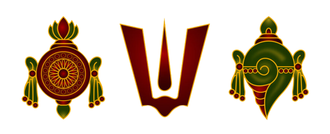

Sanatan Dharma
Preserving timeless Vaidik teachings and creating opportunities for spiritual learning, worship, and devotion.
Faith • Culture • Community • Seva
Preserving Sanatan Dharma, nurturing spiritual growth, celebrating our cultural heritage, and serving our community through devotion, education, and seva.

Welcome
Shree Vaidik Bhakti Center of Greater Cincinnati is dedicated to preserving and promoting Sanatan Dharma and Vaidik traditions while creating a welcoming spiritual home for our community.
Through worship, education, cultural programs, community gatherings, and seva, we seek to nurture devotion, strengthen families, preserve our heritage, and pass timeless spiritual values to future generations.
Learn About Us →Our Purpose
To preserve and promote Sanatan Dharma and Vaidik traditions while fostering spiritual growth, cultural education, seva, unity, and harmony within our community.
Preserving timeless Vaidik teachings and creating opportunities for spiritual learning, worship, and devotion.
Supporting individuals and families in developing devotion, values, knowledge, and a deeper spiritual connection.
Preserving Hindu traditions, language, festivals, culture, and knowledge for present and future generations.
Serving our community with compassion while encouraging unity, inclusiveness, cooperation, and interfaith harmony.
Learn • Worship • Serve
Our programs provide opportunities for worship, spiritual learning, cultural preservation, community connection, and seva.
Prayer, spiritual gatherings, Vaidik traditions, and opportunities to deepen devotion and understanding.
Traditional puja, worship, and sacred observances rooted in Vaidik and Sanatan Dharma traditions.
Devotional singing and community gatherings that bring devotees together through bhakti.
Community celebrations of important Hindu festivals, traditions, and sacred occasions.
Educational opportunities helping younger generations understand Dharma, values, traditions, and heritage.
Programs supporting cultural knowledge, language learning, heritage, and community education.
Gather • Celebrate • Worship
Join our community for worship, festivals, spiritual programs, educational activities, and cultural celebrations.
Join our community for prayer, devotion, spiritual learning, and fellowship.
Learn More →Celebrate sacred Hindu festivals together through worship, culture, devotion, and community.
Learn More →Come together for devotional music, prayer, and meaningful community fellowship.
Learn More →Service With Devotion
Seva, or selfless service, is an important expression of our spiritual values. Through service, we put compassion, devotion, and Dharma into action.
Our community strives to support one another, serve those in need, encourage volunteerism, and create opportunities for individuals and families to contribute their time, talents, and resources.
Discover Seva Opportunities →
Growing through devotion and Dharma.
Preserving our traditions and heritage.
Sharing knowledge across generations.
Building unity and lasting connections.
Serving selflessly with compassion.
Make a Difference
Your support helps sustain spiritual programs, cultural education, youth activities, festivals, community service, and the future growth of Shree Vaidik Bhakti Center.
Donate / Offer Seva